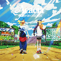
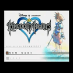
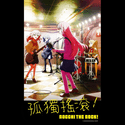
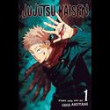

| Video Name | Description | Length | Related Image |
|---|---|---|---|
| オールナイトレディオ | Japanese artist Ado's music video for her song "All night radio" that combines 2D and 3D animation as well as pictures of real life locations | 3:34 | |
| Foo Fighters - Everlong (Official HD Video) | A music video of the classic song Everlong by the popular 90s band Foo Fighters | 4:51 | |
| Official Evo Moment #37, Daigo vs Justin Evo 2004 in HD | On August 1st, 2004, the biggest tournament at the time for the video game Street Fighter 3 3rd Strike was taking place in California where one player named "Daigo" achieved an input thought to be impossible by using frame perfect inputs in order to win the match | 1:15 | |
| Hall of Legends: Faker | A documentary going over the legacy of Korean legend of the popular game League of Legend, Lee "Faker" Sang-hyeok. League of Legends pro player "Faker" who could be considered the Michael Jordan or Lebron James of the game is the first to be inducted to the hall of fame of League of Legends pro players | 37:54 | |
| 【Official】Pokémon Special Music Video 「GOTCHA！」 | BUMP OF CHICKEN - Acacia | Animated music video by Japanese band "BUMP OF CHICKEN" made for the 25th anniversary of pokémon in the year 2020. It uses exceptional 2d art to create an animated music video that sends nostalgia throughout every pokémon fan who's followed the series since their childhood | 3:14 |  |
| Kingdom Hearts Dearly Beloved (Original Version) | The song "Dearly Beloved" from the title screen of video game "Kingdom Hearts". It was composed by Yoko Shimomura | 4:20 |  |
| Pokémon Legends: Z-A releases simultaneously worldwide in 2025! | Video announcement for the next video game in the hit series Pokémon. A new adventure awaits within Lumiose City, where an urban redevelopment plan is underway to shape the city into a place that belongs to both people and Pokémon. | 1:56 | |
| Bocchi's Solo | BOCCHI THE ROCK! | Clip of the anime "BOCCHI THE ROCK!" where an introverted girl named Hitori temporarily puts her public anxiety to the side to deliver an unimprovised guitar solo to save her band’s concert performance | 2:19 |  |
| Itadori and Todo vs Hanami | JUJUTSU KAISEN | Clip of the anime "Jujutsu Kaisen" of two characters going against an exceptionally tough opponent | 1:48 |  |